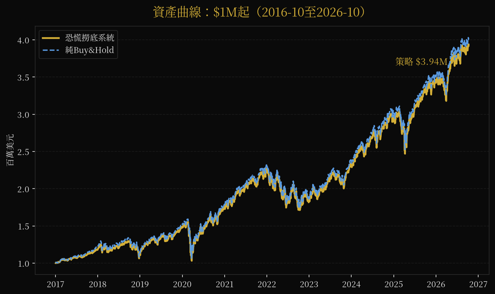
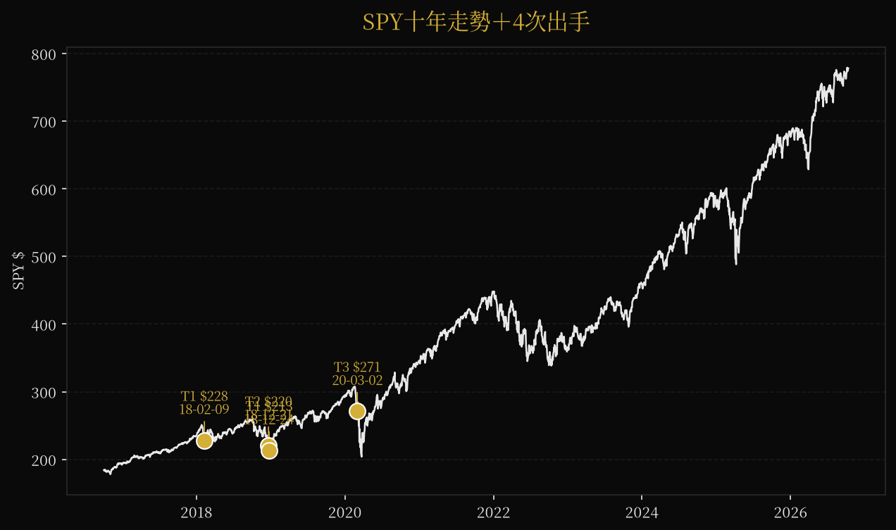
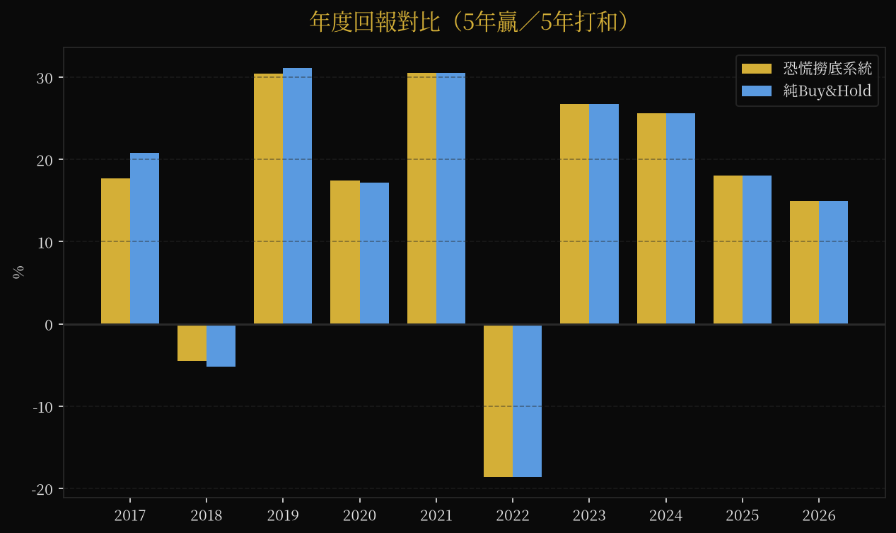
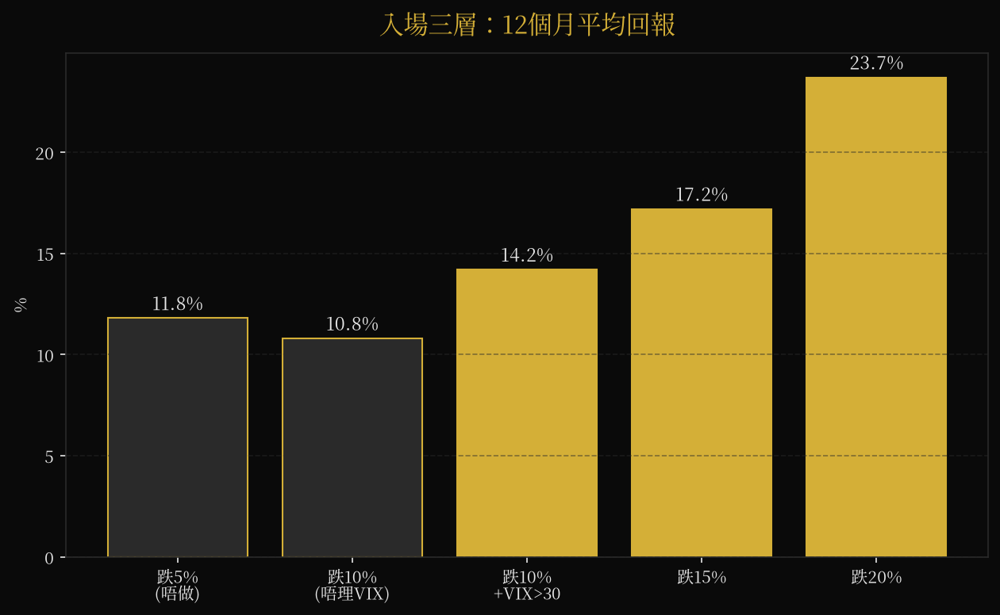
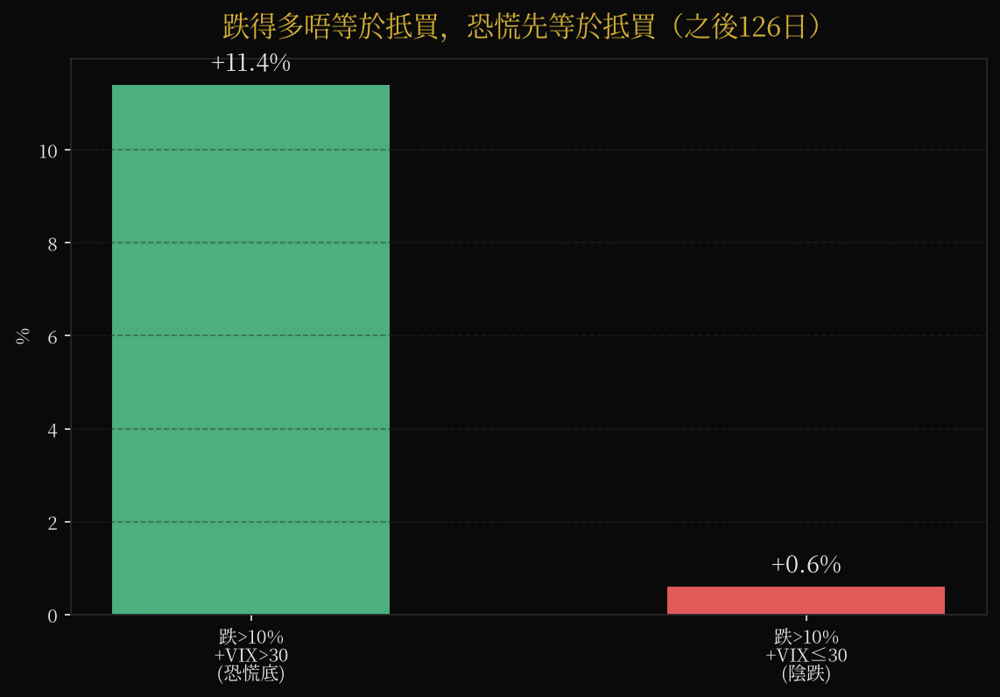
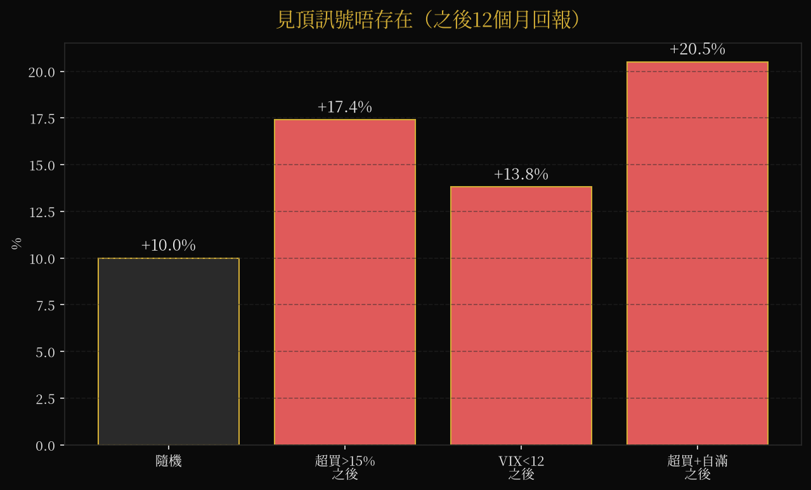
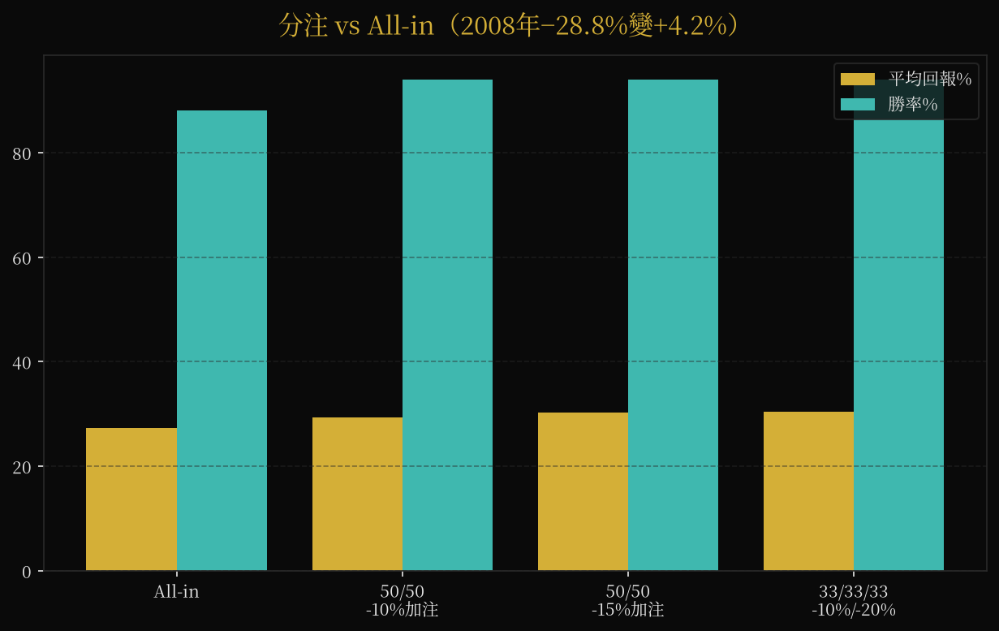
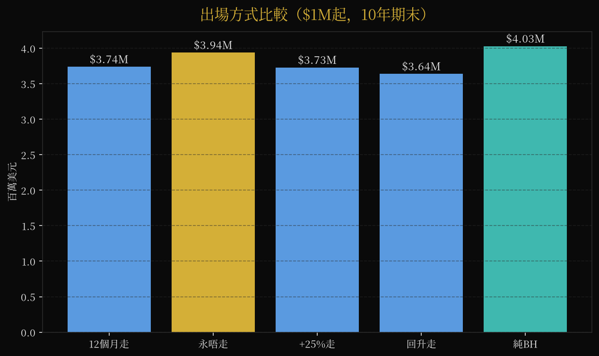
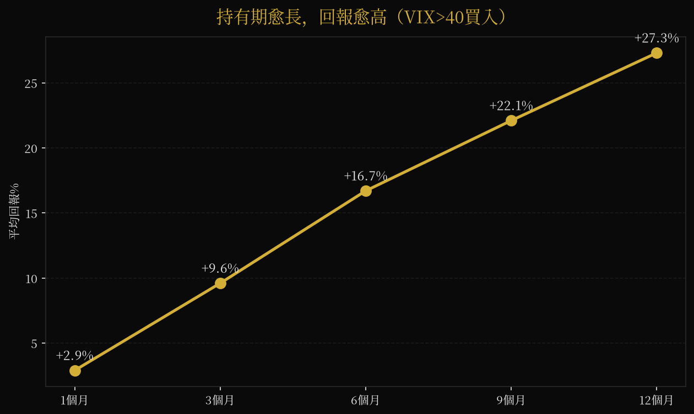

30 年回測 · 每日更新的市場壓力指數
六條腿等權合成：估值、曲線、信用、恐慌、勞動、政策
金線：股災指數（50＝中性）｜灰線：S&P 500（對數軸）｜灰底：美國衰退期。可拖拽縮放，hover 睇數值。
每條腿係過去 10 年滾動 z-score：正數＝比歷史偏危險，負數＝偏安全。
上面個指數量「脆弱度」（慢變量，月頻）；呢度量「觸發度」（快觸發，日頻）。兩個分開睇，唔撈埋。股災通常係脆弱＋觸發撞埋一齊。
五燈模型入面唯一真正快嘅燈：回測四次事件三次有份，2020-02 曾達 94 分。分數愈高，市場恐慌定價愈勁。
五燈模型之V燈 · 研究版（回測：唯一快燈，2020-02 曾達 94 分）｜knots 原裝未郁｜純研究教育，唔係投資建議。
85% SPY 長揸唔郁，15% 現金等恐慌。撳下面啲卡逐層睇——今晚教學就係用呢頁講。









超買＞15%之後12個月平均+17.4%，估頂賣一半係同 momentum 對賭。
跌10%但VIX唔高，之後12個月平均+0.6%（vs 恐慌底+14.2%）。2000–2002、2022 就係咁死。
止蝕位正正喺V形個底。回測：設15%止蝕將總回報由+198%斬到+112%。
Backwardation買put平均−29%／勝率10%；買正股+16.3%／91%勝率。VIX高之後多數V形反彈，put被反彈殺死。
每日四個掃描（大師動向／Burry追蹤／策略發現／觸發器）嘅中文摘要，最新在前。齋睇唔使撳。
載入中…
載入中…
誠實回測，唔靚嘅結果照寫。
| 股災 | 六腿版 | 純估值版 | 結論 |
|---|---|---|---|
| 科網爆破 (2000-03) | 58 | 74 | 兩個版都捉到（估值 +2.4σ） |
| 金融海嘯 (2007-10) | 51 | 52 | 兩個版一齊 miss——唔係估值危機 |
| 疫情股災 (2020-02) | 62 | 61 | 兩個版都叫（VIX +4.0σ） |
| 2022 熊市 (2021-12) | 51 | 75 | 得純估值版叫到 |
股災指數 = 50 + 10 × mean(z₁…z₆) 純估值版 = 50 + 10 × z_估值
六條腿：估值 Wilshire 5000 ÷ GDP（巴菲特式）｜曲線 −(10年−2年利差)｜信用 Moody's Baa−Aaa 利差｜恐慌 VIX｜勞動 Sahm rule｜政策 聯邦基金利率。每條腿用過去 120 個月 trailing z-score，無用未來數據；GDP 滯後一季、失業率滯後一個月。權重事前定死等權，睇完結果冇調過。
數據：FRED、yfinance，1994–2026 月頻。